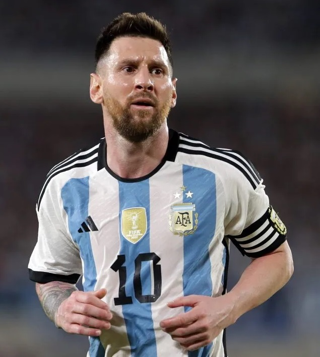
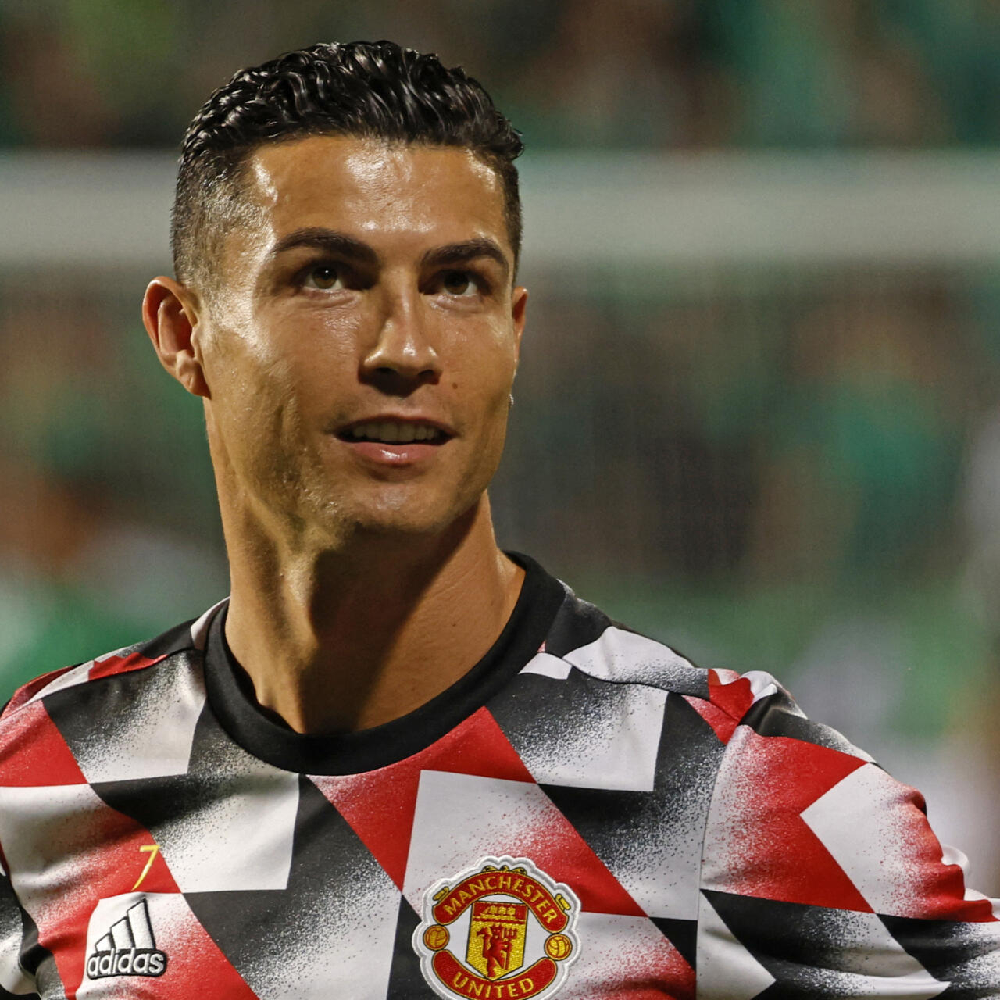
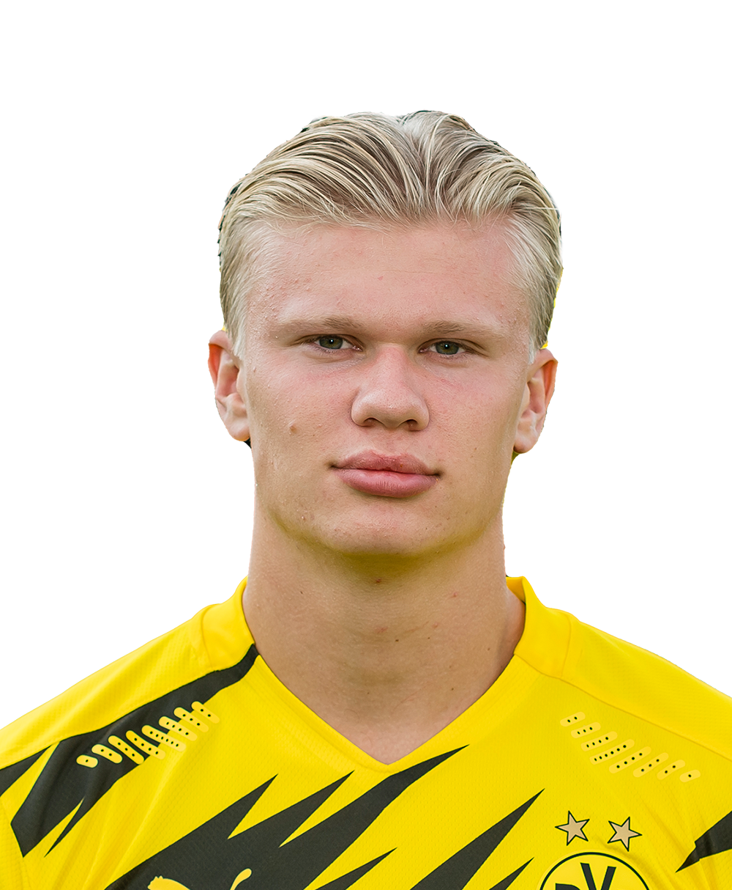

| Nume |
Poze |
Vârstă |
Detalii |
| Lionel Messi |
 |
36 ani |
Messi a fost considerat de mulți ca unul dintre cei mai buni fotbaliști din toate timpurile. El a avut o carieră strălucitoare la FC Barcelona și a câștigat 7 ballon d'or |
| Cristiano Ronaldo |
 |
38 ani |
Ronaldo este un alt gigant al fotbalului, cunoscut pentru versatilitatea sa și capacitatea de a marca goluri la nivel înalt. El a jucat pentru cluburi de top precum Manchester United, Real Madrid și Juventus. |
| Neymar Júnior |
 |
31 ani |
Neymar este celebru pentru driblingurile sale spectaculoase și creativitatea sa pe teren. A avut o carieră de succes la FC Barcelona și apoi la Paris Saint-Germain. |
| Erling Haaland |
 |
23 ani |
Tânărul atacant norvegian a atras atenția cu golurile sale impresionante la Borussia Dortmund și apoi la Manchester City. |